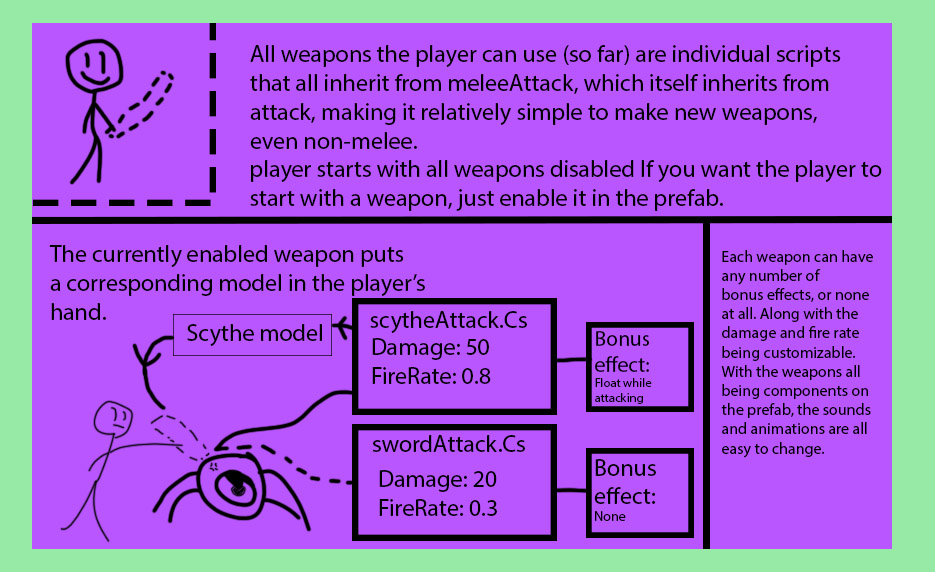

Starfall

Operation starfall is a Unity project that people have been working on for years, and when
I was asked to add something to the game, I thought making a new weapon could be fun, since the only thing you could use to
defeat enemies was a sword. I decided to make a scythe, but to start that I needed to make the weapon system modular first.
I also made the scythe model in the game in blender myself.